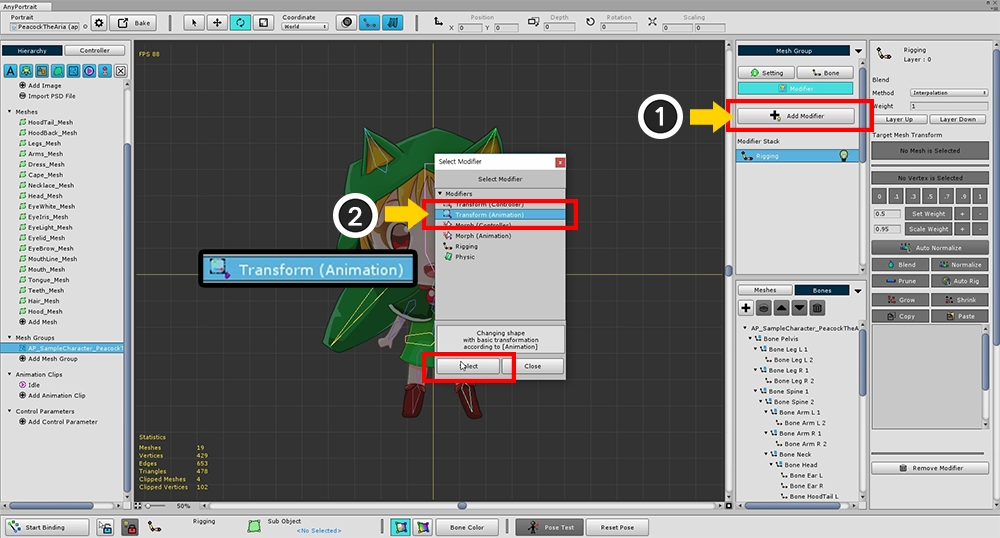
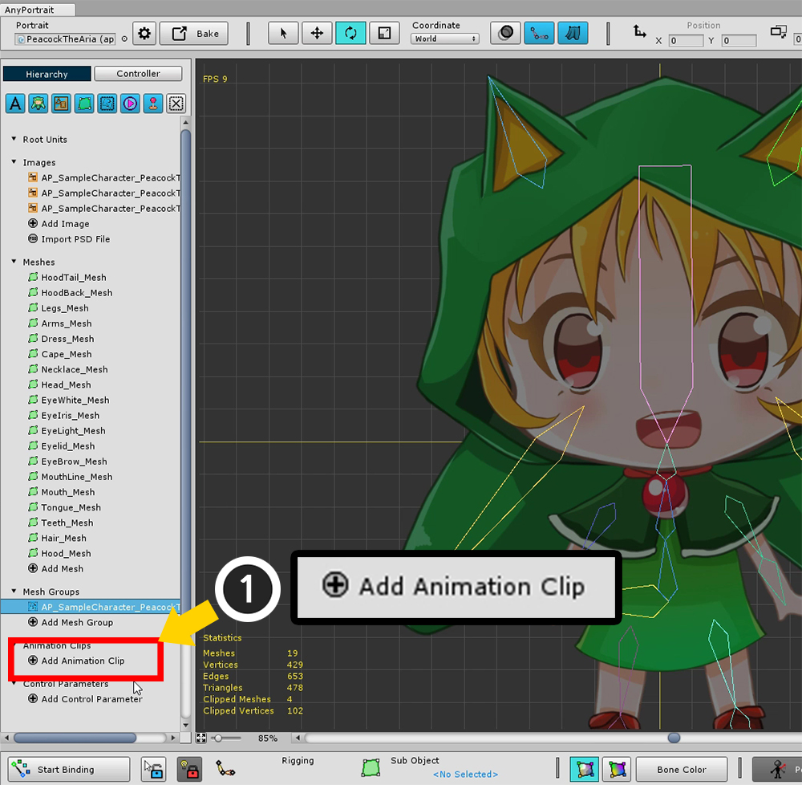
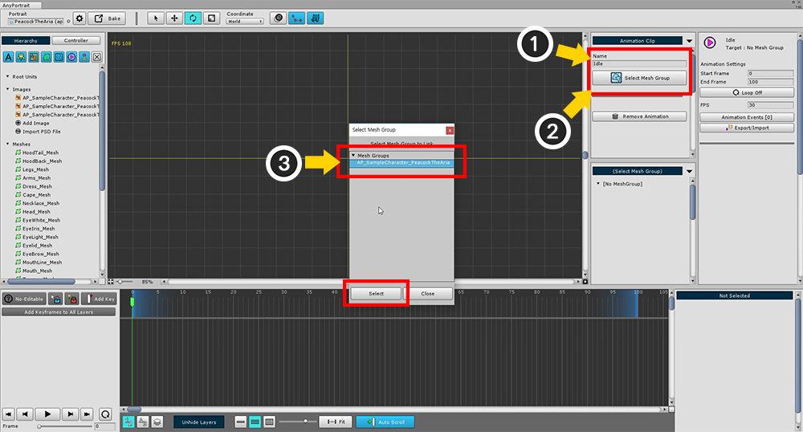
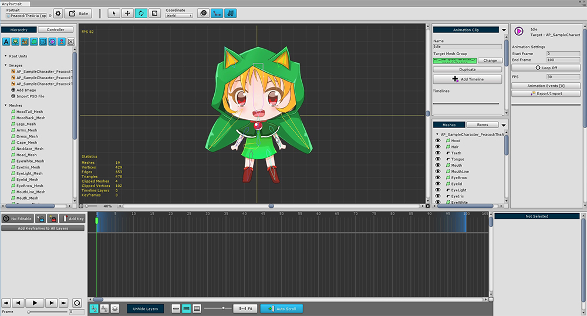
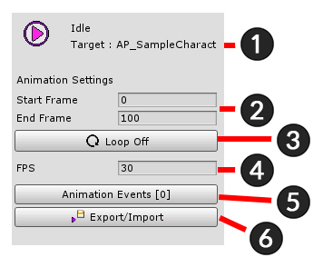
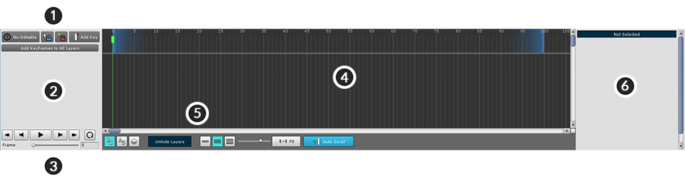
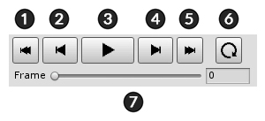
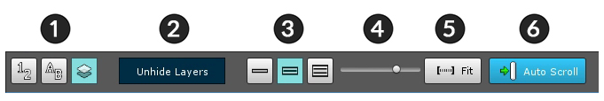

AnyPortrait > 入門ガイド > 2.6. アニメーションクリップを作成
2.6. アニメーションクリップを作成
1.0.0

アニメーションに関連付けるモディファイアを追加します。
「Transform（Animation）」と「Morph（Animation）」はアニメーションのモディファイアです。
骨アニメーションのために「Transform（Animation）」モディファイアを選択してください。

アニメーションクリップを追加します。
「Add Animation Clip」ボタンをクリックして、アニメーションクリップを作成して選択します。

(1) アニメーションクリップの名前を設定します。 私はここでそれを「Idle」に設定しました。
(2) 「Set Mesh Group」ボタンを押し、(3) 作業していたメッシュグループを選択します。
注意 : アニメーション名は、ゲーム中にアニメーションを再生するために使用されます。 名前が重複したり間違って入力された場合、再生はできません。

これは、メッシュグループに関連付けられたアニメーションクリップの作業画面です。
この画面でアニメーションを作成します。

左はアニメーションクリップの設定UIです。
1. アニメーションクリップとメッシュグループの名前
2. アニメーションクリップの開始フレームと終了フレーム
3. 「ループ(Loop)」を指定するかどうかは、
4. フレーム/秒(FPS)
5. アニメーションイベント(Animation Events)
6. アニメーションをファイルにエクスポート/インポートする(Export / Import)

キーフレームアニメーションが登録される「タイムラインUI (Timeline UI)」。
アニメーションデータを「タイムライン(Timeline)」と呼んでください。
1. 編集モードUI : 編集モードのオン/オフ、キーフレームの追加、ロック。
2. タイムラインヘッダー : 登録されたタイムラインとタイムラインレイヤーの名前が表示されます。
3. 再生UI : アニメーション、再生、停止、またはフレームの移動を制御するUI。
4. キーフレームのワークスペース : キーフレームが表示されます。( 左右のスクロール： マウスホイールボタンドラッグ 、上下スクロール： マウスホイールのスクロール )
5. ビュー設定のUI : タイムラインUIに関連する設定の表示に関連する機能が含まれています。
6. 詳細UI : 選択したタイムライン、タイムラインレイヤー、およびキーフレームの情報と機能が表示されます。

編集モードUI
1. アニメーション編集の開始/終了 ( A )
2. 選択ロックのオン/オフ ( S )
3. モディファイアロックのオン/オフ ( D )
4. 現在のフレームにキーフレームを追加する ( F )
5. 現在のフレームのすべてのレイヤーにキーフレームを作成する

再生UI
1. 最初のフレームに移動 ( Shift + < )
2. 前のフレームに移動 ( < )
3. 再生または一時停止 ( Space Bar )
4. 次のフレームに移動 ( > )
5. 最後のフレームに移動 ( Shift + > )
6. ループオン/オフ
7. 現在再生中のフレーム

ビュー設定のUI
1. タイムラインレイヤー順序 : タイムラインレイヤーが表示される順序を決定します。 （登録順、名前順、レンダリング順）
2. Unhide Layers : タイムラインレイヤーが非表示になっている場合は、このボタンを押して表示させることができます。
3. タイムラインのUIサイズ：エディタ領域全体の下部にあるタイムラインUIのサイズを調整します。
4. UIズームの比率 : キーフレームが表示されるメインタイムラインワークスペースのズーム率。
5. Fit : 再生範囲全体に合わせてメインワークスペースのズーム比を自動的に調整します。
6. Auto Scroll : この機能がオンの場合、スクロールすると自動的にフレームに移動します。